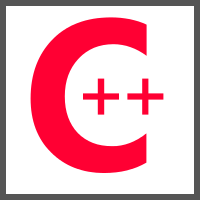
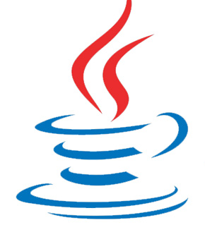

C++
I learned C++ at UHD. I took an introductory course, a Data Structures course, and a course with a focus on algorithms. However the latter two courses could be applied to any programming language.
Java
I first encountered Java at a CodeDay where i collaborated with a fellow programmer named David to develop a 9x9 game of Tic Tac Toe. David programmed the GUI in Swing and we both worked on the logic.
My next encounter with Java was when I took an Object Oriented Programming class. The professor exclaimed that Java was the best language for teaching Object Oriented Programming. That class not only helped me learn Java but also how to utilize OOP features like polymorphism, encapsulation, and inheritance.
My third encounter with Java was actually two encounters within the same time frame. For my Software Engineering class I was in a team. We had to create a Tic Tac Toe game with 3 AI opponents. We had to follow the software engineering steps making the following documents:
- Requirements
- Software Specifications
- Detailed Design
- Software Project Management Plan
- Test Plan
We used JavaFX to create the GUI based game. I wanted to use it instead of Swing since it was a newer platform. More information on this can be found in the Projects section.
My third and a half encounter with Java was when I worked with another student at UHD to create a Database application that would help the user plan a diet. Again we used JavaFX. We were able to connect the JavaFX application with a MySQL server using JBDC.
In my latest encounter with Java, I created a calculator app for Android using the appropriately named Android Studio.
R
For my Senior Project I used R to analyze personality percentile scores. I used the kmeans clustering package for R to cluster said data.
Python
I first learned Python through a codeacademy.com course. I then used it in a hackathon to gather tweets from US politicians and again for my Senior Project.
JavaScript
I learned JavaScript in my Computer Graphics class. Although graphic programming is usually done with C++ we used WebGL which lets you program graphics in JavaScript. However the shaders were done in C++.
C#
One of my projects that I eventually will go back to was a poker game with an AI opponent. I first tried to program this in Visual Basic and then C#. In both attempts I tried to make a Windows Forms game.
Later on I went back to C# and made a Windows Forms application that allowed the user to look up the safety ratings of a car.
Now that cross platform development for C# is more supported by Microsoft, I am learning more about it as I predict that it will become a competitor to Java.
Visual Basic
I took a Visual Basic class in college. We learned the .NET version and we programmed Windows Forms applications with it. It was fun to create programs that look like the ones I grew up on.